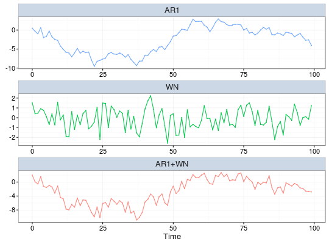
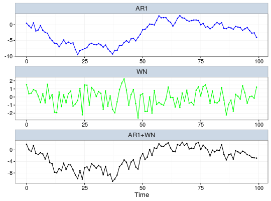

# S3 method for lts plot(x, to.unit = NULL, background = "white", scales = "free", line.type = NULL, line.color = NULL, point.size = NULL, point.shape = NULL, title = NULL, title.size = 15, axis.label.size = 13, axis.tick.size = 11, axis.x.label = NULL, axis.y.label = NULL, facet.label.size = 13, facet.label.background = "#003C7D33", ncol = 1, nrow = NULL, ...)
lts objectstring indicating the unit which the data is converted to. The supported units are "ns"(nanosecond), "ms"(millisecond), "sec", "min", "hour", "day", "month", and "year".string that determines the graph background. It can be "grey" or "white".scales in facet_wrap() in ggplot2 package: should scales be fixed ("fixed"), free ("free"), or free in one dimension ("free_x", "free_y"). The default is "free" in this function.vector of string that indicates the type of lines.vector of string that indicates the color of lines.vector of integer that indicates the size of points on lines.vector of integer that indicates the shape of points on lines.string that indicates the title of the graph.integer that indicates the size of title.integer that indicates the size of label.integer that indicates the size of tick mark.string that indicates the label on x axis.string that indicates the label on y axis.integer that indicates the size of facet label.string that indicates the background color of the facet label.integer that indicates number of columns.integer that indicates number of rows.ggplot2 panel containing the graph of latent time series.
Plots the graph of latent time series using ggplot2

# Modify the graph aesthetics plot(res, line.color = c('blue', 'green', 'black'), point.size = c(1,1,1))